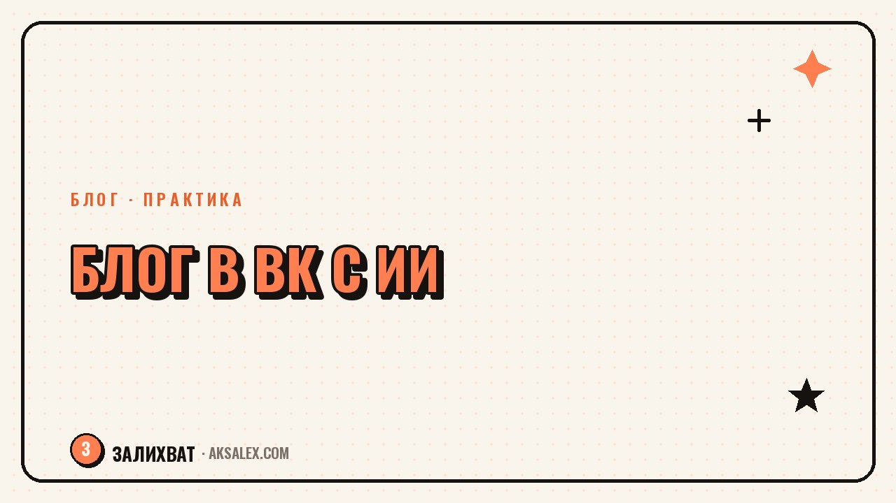

Как раскрутить блог в ВК с помощью нейросетей

ВКонтакте живёт по своим правилам: там заходят посты с текстом, работают сообщества и обсуждения, а не только короткие видео. Раскрутить блог в ВК с помощью нейросетей - значит не переносить формат из Reels один в один, а собрать под площадку свою связку: контент-план, тексты постов, обложки и разбор того, что заходит аудитории. Разберём это по шагам.
Чем продвижение в ВК отличается от других площадок
В ВК дольше живёт текстовый формат: развёрнутый пост с личной историей или разбором темы собирает вовлечённость не хуже видео, если написан живо и по делу. Это меняет и то, для чего стоит использовать нейросеть - здесь важнее помощь в текстах и структуре постов, а не только в монтаже роликов.
Второе отличие - сообщества и обсуждения под постами. Алгоритм ВК заметно охотнее показывает публикации, под которыми есть комментарии, поэтому продвижение строится не только вокруг самого поста, но и вокруг вопросов, которые провоцируют аудиторию высказаться.
Форматы, которые хорошо заходят именно в ВК
- Развёрнутый пост-история с личным опытом
- Подборки и списки - легко читаются и репостятся
- Опросы и вопросы к аудитории в конце поста
- Карусели с несколькими слайдами вместо одной картинки
Контент-план и тексты постов с нейросетью
Начни с контент-плана на 2-3 недели вперёд, а не с ежедневного придумывания темы с нуля. Дай нейросети список твоих направлений и попроси распределить их по дням недели с разными форматами - так в ленте не будет однообразия, а сама подготовка займёт один вечер вместо ежедневных мучений.
Для самих текстов постов нейросеть удобна как черновик и структура, а не как готовый финальный вариант. Дай ей тему и ключевые тезисы, которые хочешь донести, попроси собрать черновик поста с зацепляющим первым абзацем и вопросом в конце - а дальше перепиши черновик своими словами и добавь личные детали, которые не сможет придумать никто, кроме тебя.
Частый совет опытных SMM-специалистов: нейросеть хороша как скелет поста, но живым текст делает конкретика - имя, дата, деталь, которую невозможно взять из шаблона.
Обложки и визуал для сообщества
Оформление сообщества в ВК - обложка группы, аватар, закреплённые посты - тоже влияет на то, подпишется ли человек, зашедший впервые. Нейросети для генерации изображений помогают быстро собрать несколько вариантов обложки без найма дизайнера, особенно на старте, когда бюджета на визуал нет.
Для карточек и карусельных постов удобно задать нейросети единый стиль - цвета, шрифт, расположение текста - и дальше генерировать слайды по этому шаблону. Так лента выглядит собранной и узнаваемой, а не как случайный набор картинок из разных источников.
Что стоит сделать самому, а не доверять ИИ полностью
- Финальный выбор обложки - по ощущению, а не только по красоте картинки
- Логотип и фирменные цвета сообщества
- Текст на обложке - лучше писать самому, чтобы не было ошибок и опечаток
Разбор статистики и что с ней делать
Статистика сообщества ВК показывает охваты, вовлечённость и переходы, но сырые цифры сами по себе мало что подсказывают. Нейросеть удобно использовать, чтобы обобщить данные за неделю или месяц - вставь цифры по постам и попроси выделить, какие темы и форматы сработали лучше, а какие проседают стабильно.
Дальше сравни результат с гипотезой, с которой ты делал пост - совпало ощущение с реальными цифрами или нет. Это тренирует чутьё к аудитории быстрее, чем разбор графиков без анализа, и со временем контент-план начинает строиться уже на данных, а не только на догадках.
Инструменты для продвижения блога в ВК
Для разных задач продвижения нужны разные инструменты - вот сравнение того, что решает каждая категория сервисов.
| Задача | Тип нейросети | Пример сервиса | Что даёт |
|---|---|---|---|
| Тексты постов | Текстовая нейросеть | ChatGPT, YandexGPT | Черновики и структура постов |
| Обложки и карточки | Генерация изображений | Kandinsky, Midjourney | Визуал без дизайнера |
| Контент-план | Текстовая нейросеть | Claude, ChatGPT | Распределение тем по дням |
| Анализ статистики | Текстовая нейросеть | ChatGPT, YandexGPT | Выводы по цифрам за период |
Частые ошибки при продвижении блога в ВК с ИИ
Самая частая ошибка - публиковать текст от нейросети без правок. Такие посты легко узнать по гладкому, но безличному стилю, и аудитория ВК, привыкшая к текстовым постам, это чувствует острее, чем в форматах с коротким видео, где текст вторичен.
Вторая ошибка - переносить контент-план из другой соцсети без адаптации. То, что хорошо работает как подпись под роликом в Reels, не всегда работает как самостоятельный пост в ВК - формат здесь предполагает более развёрнутый текст и явный призыв к обсуждению в комментариях.
Частые вопросы
С чего начать раскрутку блога в ВК с помощью нейросетей?
Начни с контент-плана на 2-3 недели с разными форматами - посты-истории, подборки, опросы. Нейросеть поможет распределить темы по дням, а дальше уже пишутся сами тексты под каждый пункт плана.
Можно ли публиковать посты, написанные нейросетью, без изменений?
Лучше не стоит - такие посты звучат гладко, но безлично, а аудитория ВК особенно чувствительна к живому тексту. Используй черновик от нейросети как структуру и добавляй личные детали от себя.
Какая нейросеть подходит для генерации обложек сообщества?
Для обложек и карточек подойдут Kandinsky или Midjourney - они помогают быстро собрать несколько вариантов визуала без найма дизайнера. Финальный выбор и фирменный стиль лучше оставить за собой.
Как понять, какие посты действительно заходят аудитории в ВК?
Нужно регулярно анализировать статистику сообщества - охваты, вовлечённость, комментарии - и сравнивать результат с ожиданием от каждого поста. Нейросеть помогает обобщить цифры за период и выделить закономерности.
Чем продвижение в ВК отличается от продвижения в других соцсетях?
В ВК дольше живёт текстовый формат и сильнее влияют комментарии под постом на охваты. Поэтому контент-план и тексты для ВК стоит адаптировать отдельно, а не переносить один в один из формата коротких видео.
а не вручную